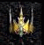

| Original Name | Nom Français |
| Arcane Circlet of Power | Diadème de Pouvoir Arcanique |
|
 |
|
| Lieu |
| Stoneheim Coffres oracle |
| Bonus |
| +100 Int, -25 Puissance Lumière |
| Commentaires |
| 4 Commentaires |
|
kraor
Messages: 1 |
- Pourquoi ne pas avoir un diademe de ce genre pour pretre (+100sag -25 puissance necro  ) Sinon ce diademe a l'air excellent pour un mage ) Sinon ce diademe a l'air excellent pour un mage
Posté le : 17-12-2003 14:59:43 |
Mat de Lock
 Messages: 96 |
-Mé qu'il est beau le diadème Parce qu'il y a déja la tiare incrusté d'émeraude. Bon ok c'est que 50 sagesse en plus mais c'est l'équivalent à peu de chose près.
Posté le : 29-12-2003 10:17:52 |
|
Devils Kriens
Loup hurlant
Messages: 378 |
- Si elle semble bien... tu peut pas avoir mieu pour un mage intel 
Posté le : 24-01-2004 23:04:56 |
|
Eyolf Wotan
Messages: 11 |
- la tiare en equivalent est mieux pour les pretres (que l'arca pour les sorciers) vu la puissance terre que ça rajoute.
Sinon pas mal.
Posté le : 29-03-2004 12:24:13 |